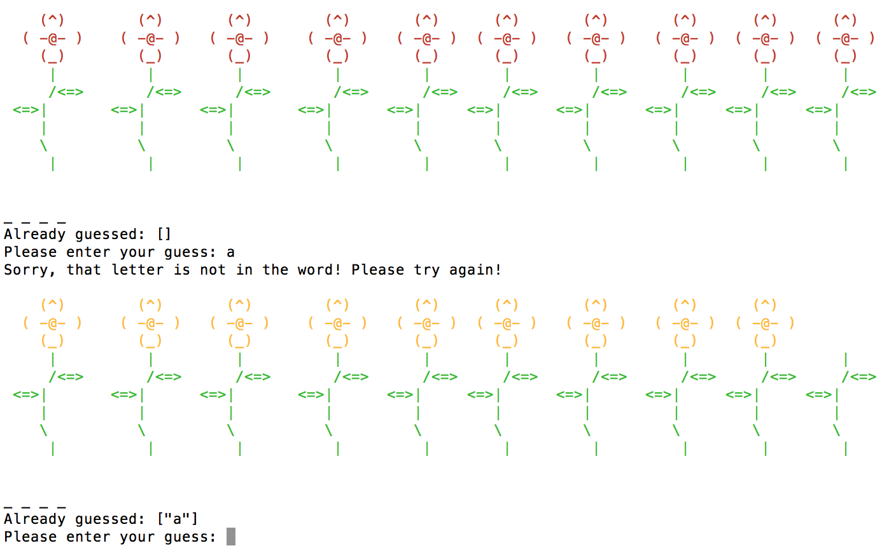

Ruby code implementing a simple flood fill algorithm (in command line; I soon hope to use SDL to make this interactive and visual, like a normal flood fill in Paint). Recursive algorithm using depth-first traversal.
Link: Command line flood fill
Screencap of program in action:

Twitter streaming and analysis
Python code for analysis of tweets. Allows the user to stream large volumes of Twitter data and perform a simple sentiment analysis on tweets containing selected keywords. Built off of code and assignments from Bill Howe’s Coursera course (GitHub repo here).
Link: Twitter streaming repo
The graph below represents sample output from this program for tweets containing the word 'college':
N.B. The program in its current form doesn't do the analysis and make the graph, it just spits out the raw data needed for analyses and graphs.
Word guess game
Command line game with rules similar to those of Hangman. This was a pair programming project completed with the talented Brandi Phillips.
Link: Word guess game
Screencap of program in action:
